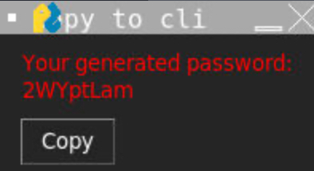

About Me
Hello! I'm Kendrick, a student with a passion for coding! I have been interested in coding for quite a while now and have participated in various courses on YouTube. I am quite proficient in Python and am currently learning C++ through an official course on Udemy. I have also participated in a hackathon called "Lag n Crash," which allowed me to gain more insight into the field. I am a curious student who always wants to know why things work, and I will not stop until I have an answer that satisfies me. Thank you for taking the time to visit and read my portfolio. I invite you to explore my projects and achievements to get a better sense of my work and dedication. If you have any questions or opportunities for collaboration, please feel free to reach out to me! I am always eager to connect with fellow enthusiasts and professionals in the field of coding!
Personal Projects
Password Generator with GUI
This project was made when I found inspiration from previous password generator projects that I found. Looking at most of them, I realised that most of them did not have a GUI, and that I coulld give it a try as this was one of my first "actual projects". While the GUI on this project does look a little off, I am glad that I learnt how to use and work with python GUIs to create functional scripts which have a user interface, particularly with the SimplePyGUI module.
View on GitHubSome Screenshots:
Powerpoint Slide Generator
This project was created together with my friend as we realized that we could automate the process of generating slides using the PowerPoint module ported into Python. The main function of the project was to eliminate the repetitive task of recreating the same set of PowerPoint slides every single week for our Bible study sessions when most of the slide content was the same. We modified the generator to include the ability to generate slides based on three song numbers, which are retrieved from the internal database. This project allowed me to learn how to use the PowerPoint module in Python, as well as how to store, manage, and retrieve data from a "database"—in this case, a YAML file that contained all the stored songs. Lastly, to enable our entire community to use it without any prior coding knowledge, we ported the project to Google Colab with user-friendly instructions on how to set everything up and obtain the generated slides in less than a minute.
View on GitHubSome Screenshots:
Awards & Achievements
Academic Competitions
1. Singapore Math Olympiad (2024)
- Participated in the Singapore Math Olympiad (Indivdual Category)
- Improved my critical thinking skills and allowed me to explore questions from different perspectives
- results (N/A)
2. Singapore Physics Olympiad 2024
- Participated in the Singapore Physics Olympiad (Team Category)
- Learned New concepts outside of the syllabus and enhanced teamwork and critical thinking skills
- results (N/A)
CCA Competitions and Achievements (Band)
1. Singapore Youth Festival 2023 (Accomplishment)
- Attained Accomplishment in the Singapore Youth Festival
- Over 4 months of preparation and practice
- Helped my bandmates by correcting their mistakes, polishing their skills, and answering their questions when they had doubts
2. Asia Pacific Band Festival 2024
- Participated in the Asia Pacific Band Festival and obtained a score of Silver with 74.28/100 points
- We worked tirelessly for this competition and gave it our best, missing Gold by just 0.72 points
- I had many memorable experiences from this competition with my bandmates, as it was the last competition I participated in before stepping down
3. Open Stage Band Competition 2023
- Participated in the Open Stage Band Competition and received a Gold award, earning the school $1,000
- We did not expect to win since our competitors were from well-regarded and strong schools
- This event was tougher because we had Secondary 1 students, who may not be skilled due to their lack of experience with their instruments
Leadership
Class Leadership Roles
1. Class Chairperson (2023)
- Role: Oversee the class and assist teachers in managing it
- Through this experience, I learned about leadership and the challenges of managing a class of 40 students
2. CCE Representative (2024)
- Role: Oversee students' well-being and help to gather feedback from students on programs
- Through the experience, I learned how teachers review students’ feedback (such as workload concerns)
CCA Leadership Roles
1. Section Leader (2022-2023)
- Role: Oversee my section and address any difficulties that might arise, or correct any mistakes
- Through this experience, I have helped my bandmates improve on parts of the scores they were unsure of
2. Welfare Head (2023-2024)
- Role: To keep track of CCA expenses during event organization, and to clean up afterward
- Through this experience, I have learned the importance of properly counting money and ensuring that it’s the right amount
Community Involvement
VIA (Values-In-Action) activities within school
1. KidsRead at Gan Eng Seng Primary School (2023)
- My class and I went to Gan Eng Seng Primary School and conducted interactive storytelling sessions, along with activity books for the lower primary students.
- Most of the kids were excited and fun to work with, and we had to explain things slowly to help them complete the task.
- Through the VIA experience, I have learned that children require careful attention, and we should acknowledge the hard work of our parents and teachers in nurturing us into who we are today.
2. NTUC share-a-textbook (2023)
3. Gan Eng Seng School's Founder's Day (2023/2024)
VIA (Values-In-Action) activities outside school
1. Volunteering @ Border Missions (2024)
2. Family Funday @ Anchorpoint (2024)
Interests
Details of your interests.
Contact Me
Email: kendrick_slamat@students.edu.sg